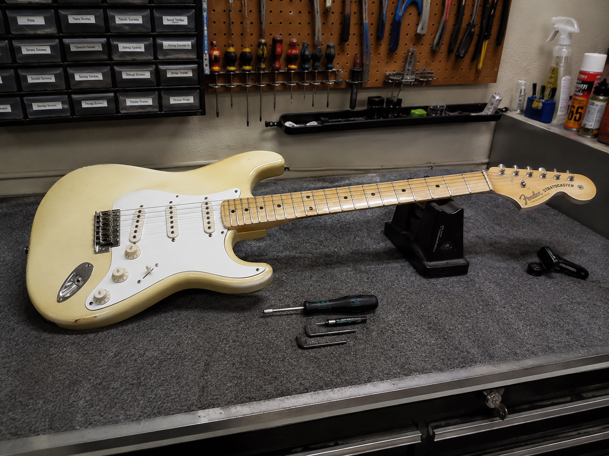
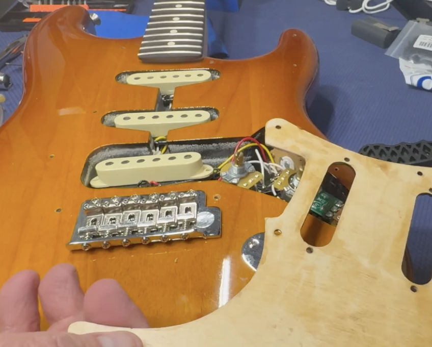
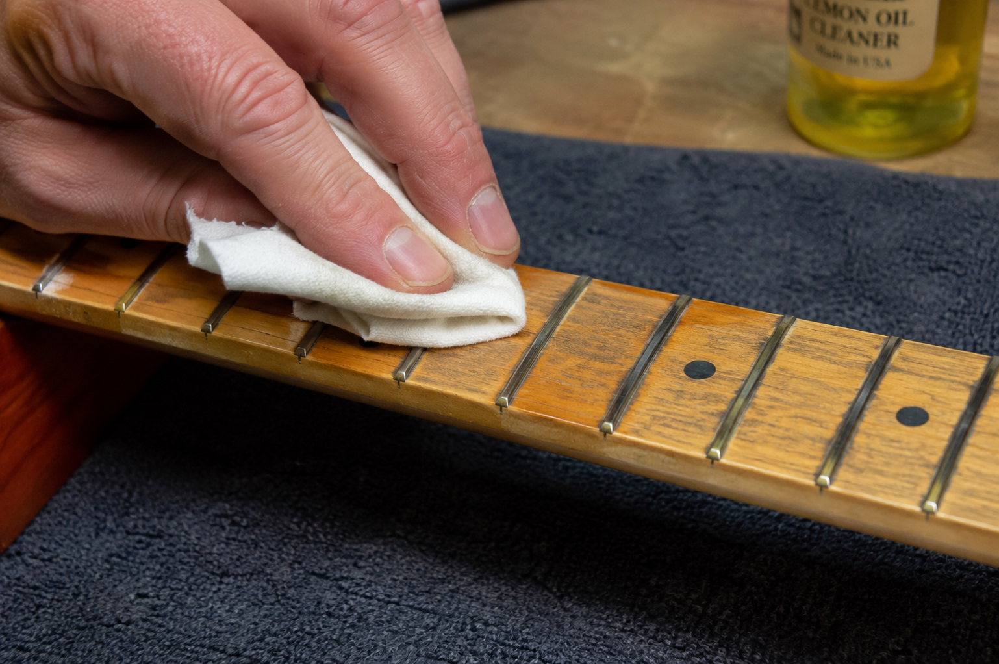
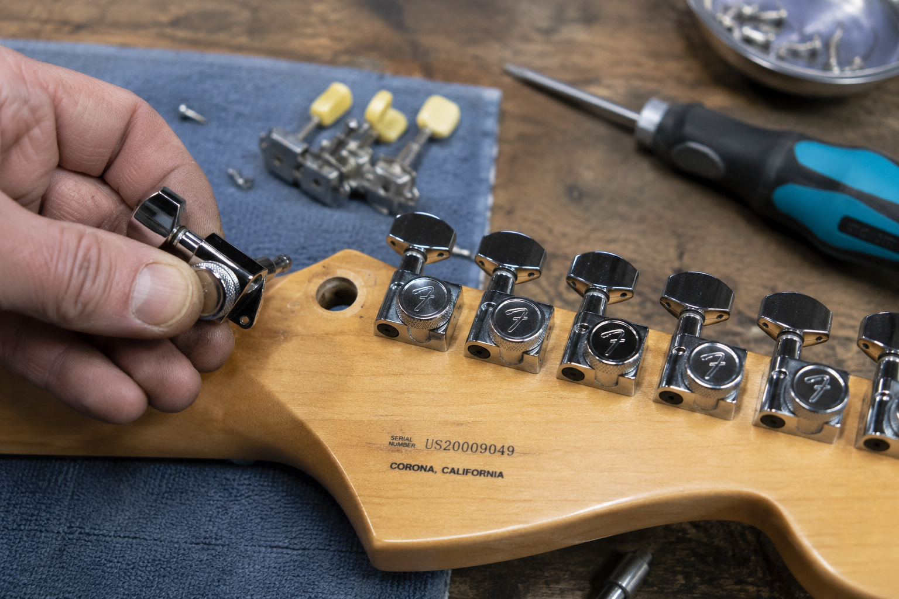
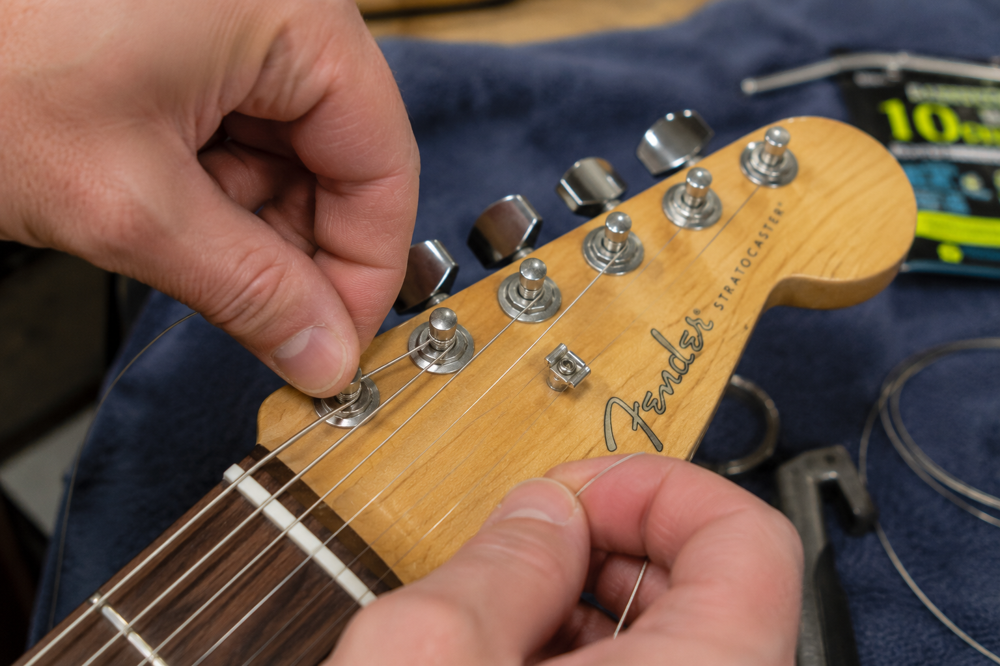
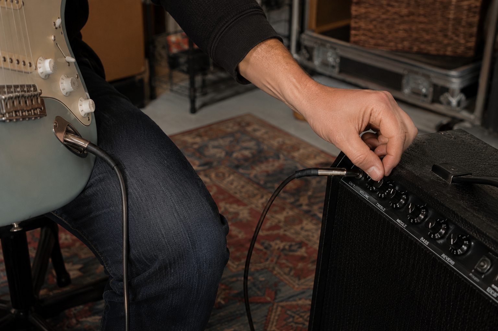

Turnaround & Repair Network
?
Coal Creek Guitars works with a small network of trusted repair technicians depending on the service requested and shop workload. Because of this, turnaround times may vary based on job complexity, technician availability, parts sourcing, and current repair volume.
We'll always do our best to provide an estimated timeline up front and communicate any changes as work progresses.
Coal Creek Guitars - Curated used guitars, clean players, and honest local deals. Buy with confidence.

Setups & Playability
Setup & Playability Services
A proper setup makes a bigger difference than almost any upgrade. Whether your guitar feels stiff, buzzes, won't stay in tune, or just isn't fun to play, we'll dial it in for better feel, tuning stability, and performance.
Electric Guitar Setup $79
Complete setup for Stratocasters, Telecasters, Les Pauls, SGs, offsets, and most standard electric guitars.
Includes:
- Neck relief / truss rod adjustment
- Action adjustment
- Intonation adjustment
- Pickup height adjustment
- Hardware check & tightening
- Electronics function check
- Fretboard cleaning (light)
- Fresh string install*
Ideal for:
- Poor playability
- String buzz or tuning issues
- Seasonal adjustment
- New or used guitar refreshes
Acoustic Guitar Setup $89
Setup tailored for acoustic guitars to improve comfort, tuning stability, and overall playability.
Includes:
- Neck relief / truss rod adjustment
- Action adjustment
- Intonation assessment
- Nut & saddle inspection
- Hardware check
- Fretboard cleaning (light)
- Fresh string install*
Ideal for:
- High action or difficult playability
- Buzzing or tuning concerns
- Seasonal changes & humidity shifts
Bass Guitar Setup $89
Complete setup for 4-, 5-, and standard bass configurations.
Includes:
- Neck relief adjustment
- Action setup
- Intonation adjustment
- Pickup height adjustment
- Electronics & hardware check
- Fresh string install*
Floyd Rose / Locking Trem Setup Starting at $119
Floating trem systems require significantly more time and balancing.
Includes:
- Trem balance & spring adjustment
- Action setup
- Neck relief adjustment
- Intonation adjustment
- Tuning stabilization
- Hardware inspection
Pricing varies based on condition, tuning changes, restring complexity, and prior setup issues.
Seasonal Tune-Up $39
Perfect for guitars that mostly play well but need minor correction.
Includes:
- Minor truss rod adjustment
- Action inspection
- Tuning & intonation check
- Hardware tightening
- Quick playability check
(Does not include full setup work.)
Add-On Services
String Change Only $20 Labor
Includes restring, tuning, stretch, and quick inspection.
Pickup Height Adjustment $15
Quick tonal balancing and output adjustment.
Basic Cleaning / Fretboard Condition $20-35
Light cleaning, polish, and fretboard conditioning.
Tremolo Decking / Spring Adjustment $20+
Strings & Restringing
New strings are not included in setup pricing.
String installation labor is included with all setups - customers pay only for the strings selected.
Standard Electric Strings:
Ernie Ball Regular Slinky (10-46) $8.99
Acoustic, coated, premium, bass, and alternate gauges available at additional cost.
String pricing varies by brand, gauge, and instrument type.
Pricing Notes
Pricing may vary depending on:
- Instrument condition
- Excessive corrosion or neglect
- Tremolo complexity
- Heavy fret wear or buzzing issues
- Prior modifications or repair needs
Need something unusual? Happy to quote custom work.

Pickup & Electronics Installation
Pickup Installation Pricing
Professional pickup installation for Gibson, Fender, acoustic, and most common electric guitar platforms. Clean soldering, proper testing, and reliable installs done right.
Gibson Style (Les Paul, SG, ES-Style)
Single Humbucker Install $59
Perfect for bridge or neck pickup swaps on Les Paul Junior, SG Junior, or partial upgrades.
Dual Humbucker Install $99
Complete 2-pickup installation for Les Paul, SG, and similar guitars.
Includes:
- Pickup installation
- Wiring cleanup & function test
- Pickup height adjustment
- Restring labor included at no charge*
Fender Style (Stratocaster, Telecaster)
Telecaster Pickup Swap $89
Install of both Tele pickups (bridge + neck).
Stratocaster Pickup Swap $109
Complete Strat pickup installation (3 pickups).
Single Pickup Replacement $49-59
For single neck, middle, or bridge pickup installs.
Includes:
- Pickup installation
- Basic wiring & electronics test
- Pickup height adjustment
- Restring labor included at no charge*
Premium / Complex Wiring Services
Push-Pull Pots / Coil Splits / Phase Mods Starting at $25+
Pricing varies depending on wiring complexity.
Complete Rewire / Electronics Troubleshooting Starting at $50+
For pots, switches, output jacks, shielding, grounding issues, or custom wiring.
Active Pickup Systems (EMG / Fluence) Quote Based
Some systems are faster due to quick-connect wiring, others require additional setup.
Strings & Restringing
New strings are not included in installation pricing.
If strings must be removed during pickup installation, restring labor is included at no additional labor charge - you only pay for the string set.
Standard String Set:
Ernie Ball Regular Slinky (10-46) $8.99
Acoustic string pricing varies by brand, material, and gauge.
String pricing varies by brand, gauge, and guitar type.
Pricing Notes
Pricing may vary depending on:
- Guitar construction & access difficulty
- Existing wiring condition
- Custom wiring requests
- Additional electronics work needed
- Imported or modified electronics layouts
Need something custom? Just ask - happy to quote unusual installs or upgrades.

Fretwork & Neck Care
Fretwork & Neck Care Services
Frets and neck condition have a huge impact on how a guitar feels and plays. Buzzing, dead spots, sharp fret ends, scratchy bends, tuning instability, or uncomfortable action often trace back to fret or neck issues.
Whether your guitar just needs cleanup or more detailed corrective work, we'll help restore smooth playability and better feel.
Fret Polish & Fingerboard Refresh $39
Perfect for guitars with dull frets, grime buildup, or rough bends.
Includes:
- Fret polishing
- Fingerboard cleaning & conditioning
- Light hardware wipe-down
- Playability inspection
Ideal for:
- Scratchy bends
- Tarnished frets
- Routine maintenance
- Refreshing a guitar that feels "tired"
Sharp Fret End Treatment Starting at $49
Smooths sharp fret edges caused by seasonal dryness or neck shrinkage.
Includes:
- Fret end smoothing & dressing
- Neck edge comfort inspection
- Basic playability check
Ideal for:
- Sharp fret edges
- Dry climate fret sprout
- Rough neck feel
Pricing varies depending on severity and fret condition.
Neck Adjustment & Playability Correction $39
For guitars needing focused neck correction without a full setup.
Includes:
- Truss rod adjustment
- Relief assessment
- Basic action/playability evaluation
- Tuning stability inspection
Ideal for:
- Seasonal neck movement
- Minor buzzing
- Action changes
- Tuning instability concerns
Spot Fret Level / Problem Area Repair Starting at $69
Targets isolated buzzing, dead notes, or uneven fret issues.
Includes:
- Problem fret diagnosis
- Spot leveling & correction
- Playability verification
Ideal for:
- One or two problematic frets
- Buzzing in isolated areas
- Dead notes or choking bends
Pricing varies based on severity and fret condition.
Full Fret Level, Crown & Polish Starting at $179
Corrective fretwork for uneven wear, buzzing, poor playability, or aging instruments.
Includes:
- Neck evaluation & prep
- Full fret leveling
- Crown reshaping
- Professional fret polish
- Playability check
Ideal for:
- Persistent fret buzz
- Uneven fret wear
- Choking bends
- Heavily played guitars
Setup and strings may be recommended after service.
Fretboard Conditioning $20
Restore moisture and improve feel on unfinished fretboards.
Includes:
- Cleaning
- Conditioning treatment
- Light polish
Recommended for rosewood, ebony, pau ferro, and unfinished boards.
(Not required for finished maple fretboards.)
Neck & Fret Diagnostics $25
Not sure what's wrong?
We'll inspect the guitar and diagnose fret buzz, neck issues, action problems, fret wear, tuning concerns, or playability issues.
Diagnostic fee may be applied toward approved repair work.
Strings & Restringing
New strings are not included in fretwork pricing.
If strings must be removed during service, restring labor is included at no additional labor charge - customers pay only for the string set selected.
Standard Electric Strings:
Ernie Ball Regular Slinky (10-46) $8.99
Acoustic, coated, premium, bass, and alternate gauges available at additional cost.
String pricing varies by brand, gauge, and instrument type.
Pricing Notes
Pricing may vary depending on:
- Fret wear severity
- Neck condition & stability
- Corrosion or oxidation
- Prior repair work or modifications
- Instrument construction & complexity
Some extensive fretwork or specialty jobs may require referral or quote-based approval.

Hardware & Guitar Upgrades
Hardware & Guitar Upgrades
Sometimes the best upgrades are the ones you feel every time you play. Whether you want better tuning stability, smoother performance, improved reliability, or upgraded functionality, we offer practical hardware upgrades for working players and everyday guitars.
From locking tuners and strap locks to bridges, knobs, and performance-focused upgrades, we'll help improve your guitar without unnecessary upsells.
Tuner Replacement / Upgrade Starting at $49 Labor
Install or replace standard or locking tuners.
Includes:
- Removal of existing tuners
- Installation & alignment
- Hardware fitment check
- Functional tuning test
Ideal for:
- Tuning stability improvements
- Locking tuner upgrades
- Worn or damaged tuners
Pricing varies based on fitment, drilling compatibility, and hardware type.
Locking Tuner Upgrade Starting at $59 Labor
Professional install of locking tuners for faster string changes and improved tuning consistency.
Includes:
- Installation & alignment
- Hardware adjustment
- Tuning function test
- Restring labor included*
Great for:
- Gigging guitars
- Tremolo-equipped instruments
- Faster restringing & tuning stability
Bridge / Tailpiece Replacement Starting at $59 Labor
Install or replace Tune-O-Matic, Tele, Strat, hardtail, stopbar, and similar bridge systems.
Includes:
- Hardware installation
- Fitment inspection
- Basic adjustment & alignment
- Playability check
Pricing varies depending on bridge type and setup requirements.
Ideal for:
- Upgrading worn hardware
- Sustain or feel improvements
- Replacement of damaged parts
Tremolo Hardware Upgrades Starting at $39
Install trem springs, claw adjustments, upgraded blocks, saddles, or related hardware.
Includes:
- Installation & adjustment
- Balance inspection
- Playability check
Great for:
- Strat upgrades
- Tuning stability improvements
- Trem feel customization
Strap Lock Installation $25
Install locking strap systems for improved stage security.
Includes:
- Strap lock installation
- Hardware fitment check
- Security inspection
Great for gigging players or heavier guitars.
Strap Button Installation / Replacement $20
Install or replace standard strap buttons.
Includes:
- Hardware install
- Stability inspection
Pickguard Replacement / Hardware Swap Starting at $35
Install replacement pickguards, knobs, switch tips, pickup rings, plates, covers, and cosmetic hardware upgrades.
Includes:
- Removal & installation
- Basic fitment adjustment
- Hardware inspection
Pricing varies based on complexity and electronics access.
Control Knob / Switch Tip Replacement $15+
Quick cosmetic or functional upgrades.
Includes:
- Installation
- Fitment check
Nut Replacement / Upgrade Starting at $79
Replace worn or problematic nuts with properly fitted replacements.
Includes:
- Nut removal & replacement
- Slot shaping & adjustment
- Playability inspection
Great for:
- Tuning stability issues
- String binding
- Worn plastic nuts
- Bone or TUSQ upgrades
Pricing varies depending on material and instrument type.
Strap Button Output Jack Installs (Acoustic) Starting at $39
Install compatible strap-button style output hardware for approved non-invasive acoustic pickup systems.
Includes:
- Secure mounting of compatible hardware
- Cable routing assistance
- Function test
Important:
No drilling, body routing, cutting, saddle slot modifications, or permanent acoustic body modifications offered.
Strings & Restringing
New strings are not included in hardware upgrade pricing.
If strings must be removed during installation, restring labor is included at no additional labor charge - customers pay only for the string set selected.
Standard Electric Strings:
Ernie Ball Regular Slinky (10-46) $8.99
Acoustic, coated, premium, bass, and alternate gauges available at additional cost.
String pricing varies by brand, gauge, and instrument type.
Pricing Notes
Pricing may vary depending on:
- Guitar design & hardware compatibility
- Existing modifications or damage
- Import vs. USA hardware fitment
- Additional adjustment or setup needs
- Non-standard installation requirements
Need something custom? Happy to quote unusual upgrades or compatibility questions.

Restringing & Cleaning
Restringing & Cleaning Services
Fresh strings and a clean instrument can completely change how a guitar feels, sounds, and inspires you to play. Whether you need a quick restring, a seasonal refresh, or a deep clean on a neglected instrument, we'll get your guitar playing and looking its best.
From everyday maintenance to grime removal and fretboard conditioning, we focus on practical upkeep that improves feel, tuning stability, and longevity.
Basic Restring $20 Labor
Professional restring service for electric, acoustic, and bass guitars.
Includes:
- Removal of old strings
- Installation of new strings*
- Stretching & tuning stabilization
- Basic tuning check
- Quick hardware inspection
Great for:
- Routine maintenance
- Gig prep
- Seasonal string changes
- Freshening up a guitar that feels dull
Restring + Setup Check $35 Labor
Perfect for guitars that mostly play well but need a little attention during restringing.
Includes:
- Full restring service
- Minor truss rod check
- Basic action inspection
- Intonation spot-check
- Hardware tightening as needed
Ideal for:
- Seasonal maintenance
- Minor tuning or feel concerns
- "Just make it play better" visits
(Does not include a full setup.)
Deep Clean & Player Refresh Starting at $49
A detailed clean-up for guitars that need more than fresh strings.
Includes:
- Full restring service
- Fretboard cleaning & conditioning
- Fret polishing (light)
- Hardware wipe-down
- Body cleaning & polish
- Dust & grime removal
- Playability inspection
Great for:
- Dirty or neglected instruments
- Marketplace finds
- Seasonal refreshes
- Reviving a guitar that hasn't been played in a while
Premium Instrument Refresh Starting at $79
A more complete restoration-style cleaning and refresh for heavily used or neglected guitars.
Includes:
- Deep cleaning & detailing
- Fretboard conditioning
- Fret polishing
- Hardware cleaning
- Electronics function check
- Restring service
- Playability inspection
Pricing varies depending on condition, corrosion, grime level, and instrument complexity.
Fretboard Conditioning $20
Restore moisture and feel on unfinished fretboards.
Includes:
- Cleaning
- Conditioning treatment
- Light polish
Recommended for:
- Rosewood
- Ebony
- Pau ferro
- Other unfinished fingerboards
(Not necessary for finished maple boards.)
Hardware Cleaning / Oxidation Cleanup Starting at $20
Clean lightly tarnished hardware and improve cosmetic appearance.
Includes:
- Surface cleaning
- Light oxidation removal
- Inspection of moving hardware
Pricing varies depending on severity and condition.
Strings
Strings are sold separately and are not included in labor pricing.
Standard Electric Strings:
Ernie Ball Regular Slinky (10-46) $8.99
Acoustic, coated, premium, bass, flatwound, and alternate gauge strings available at additional cost.
Customers may also provide their own preferred strings.
String pricing varies by brand, gauge, and instrument type.
Pricing Notes
Pricing may vary depending on:
- Instrument condition
- Heavy grime or neglect
- Corrosion or oxidation severity
- Tremolo system complexity
- Bass or specialty string installation
Need something unusual? Happy to quote custom care or cleanup work.

Diagnostics & Repair
Diagnostics & Repair Services
Not every guitar problem needs a full setup or major repair. If something buzzes, cuts out, won't stay in tune, crackles, hums, feels wrong, or just doesn't play like it should, we'll help diagnose the issue and recommend the right fix.
We focus on practical, honest repair work with clear communication - no unnecessary upsells, no mystery charges.
Basic Guitar Diagnostic $25
Not sure what's wrong? Start here.
Includes:
- Playability evaluation
- Basic electronics check
- Tuning stability inspection
- Neck, action & hardware assessment
- Repair recommendation
Common concerns:
- Buzzing or rattling
- Poor tuning stability
- Action feels wrong
- Strange noises or intermittent signal
- General "something feels off"
Diagnostic fee may be applied toward approved repair work.
Electronics Diagnostic $35
For guitars with electrical or signal problems.
Includes:
- Pickup & wiring inspection
- Potentiometer (pot) testing
- Switch & output jack testing
- Signal path troubleshooting
- Noise, hum, or crackle diagnosis
Common concerns:
- Signal cutting out
- Scratchy pots
- Weak pickup output
- Hum, buzz, or grounding issues
- Intermittent electronics
Diagnostic fee may be applied toward approved repair work.
Hardware / Tuning Stability Diagnostic $35
For tuning problems, rattles, tremolo issues, or hardware concerns.
Includes:
- Tuner inspection
- Nut & string path evaluation
- Bridge & saddle assessment
- Tremolo function inspection
- Hardware stability check
Common concerns:
- Guitar won't stay in tune
- Tremolo instability
- Rattling hardware
- Buzzing from saddles or bridge
- String binding issues
Diagnostic fee may be applied toward approved repair work.
Fret Buzz / Neck Evaluation $35
Targeted diagnosis for buzzing, choking bends, dead notes, or neck movement concerns.
Includes:
- Relief & neck assessment
- Action inspection
- Fret condition evaluation
- Playability diagnosis
Common concerns:
- Persistent fret buzz
- Dead spots or choking notes
- High or uneven action
- Seasonal neck movement
Diagnostic fee may be applied toward approved repair work.
Minor Repair Services Starting at $20+
Simple fixes that do not require major labor or replacement parts.
Examples include:
- Loose jack tightening
- Strap button repair
- Loose hardware correction
- Output jack replacement
- Minor electronics fixes
- Basic solder repairs
Pricing varies depending on labor and parts required.
Repair Estimates & Quotes
After diagnosis, we'll provide a clear recommendation and estimated repair cost before proceeding.
No surprise repairs. No hidden labor charges. Approval required before work begins.
Parts & Materials
Replacement parts are not included in repair pricing unless otherwise noted.
Common replacement items may include:
- Output jacks
- Pots & switches
- Wiring components
- Strap buttons
- Screws, springs & small hardware
Parts pricing varies depending on brand, compatibility, and availability.
Pricing Notes
Pricing may vary depending on:
- Repair complexity
- Existing modifications
- Corrosion or neglect
- Parts availability
- Prior repair attempts or wiring issues
Some major repairs, structural work, refinishing, headstock repairs, crack repair, routing, or extensive luthier work may require referral or quote-based approval.